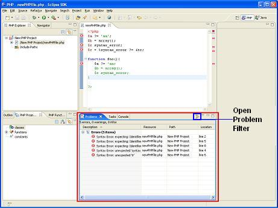

The Problems View shows a list of all the problems in the workspace. Problems can be of many types but are generally code syntax errors.
Select Window
| Show View | Problems,
or: Window
| Show View | Other | General | Problems.
The Problems View will open in your Perspective.

Figure 1 - Problems View
The Problems View contains a list of problems detected in the Project's files. Each problem contains the following items:
|
Description |
A description of the problem. |
|
Resource |
The name of the file containing the problem. |
|
Path |
The Project containing the Resource file. |
|
Location |
The line containing the error. |
You can filter problems to limit the view to a subset of only those problems that are of immediate interest. This feature is generally used when the workspaces has too many problems to view them all effectively.
Note: All problems recognized by the PDT can be enabled/disabled. Filtering enables you to view a user-defined subset of the Problem View list.
Click on the Filter icon on the Problems View tab. The Problems Filter will open.
Figure 2 - Problem Filters
Select one of the following problem sets:
Show problems for any resource.
Show problems for any resource in the same project as the selected resource.
Show problems for the selected resource only.
Show problems for the selected resource and its children.
Show resource for a specific working set
Filter according to description
The Filter displays / hides the types of problems listed below. By default, all of the Problem Types are selected.
Toggle the Problem Types on / off as required.